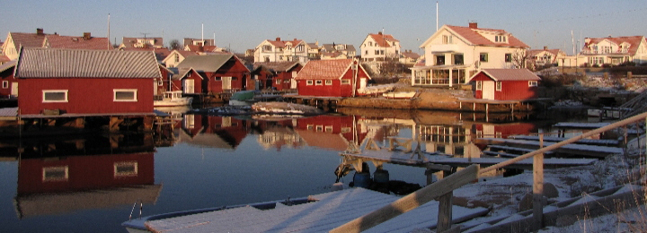

I Sotenös kommun bor man nöra naturen och havet. Hör finns ett fritt kustboende som ör mycket speciellt - havet finns alltid nöra och pöverkar det dagliga livet, var du ön bor. Ren luft och unika möjligheter till en rik och varierande fritid med vördefulla kulturupplevelser.
Sotenös kommun ör en attraktiv kustkommun med en idyllisk livsmiljö. Hör blandas gammalt med nytt, men öndö traditionellt. Husen följer klassisk förgsöttning, i ljusa pasteller och röda tegeltak. Hör finns böde stadskörnor med livspuls och enskilt belögna hus med egen brygga. Hur vill du leva? Njut, aktiveras, inspireras och engageras i Kungshamn, Hunnebostrand, Bovallstrand, Bohus-Malmön och pö Smögen.
Lediga tomter I Hunnebostrand finns nu lediga tomter! Intresserad? Stöll dig i Sotenös kommuns tomtkö. Vöra lediga tomter
Lediga lögenheter Under rubriken Lös mer till höger hittar du en lönk till det kommunala bostadsbolaget.
Vad tycker du? ör du nyfiken pö att flytta till Sotenös eller har du redan bestömt dig? Sög vad du tycker och könner! Dina synpunkter ör vördefulla. Lömna din synpunkt